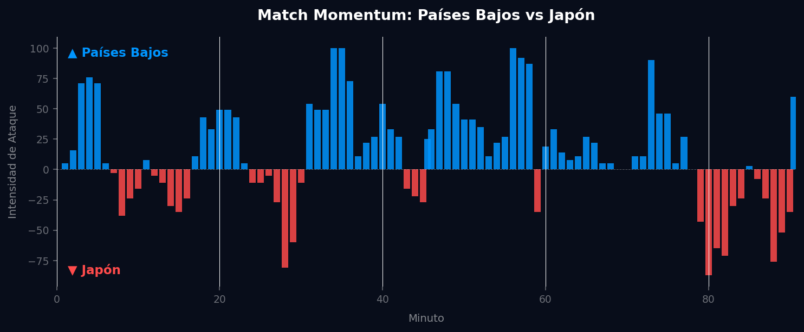
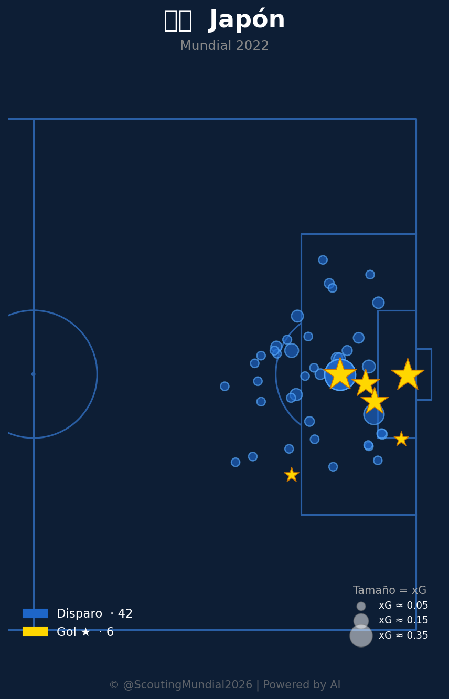
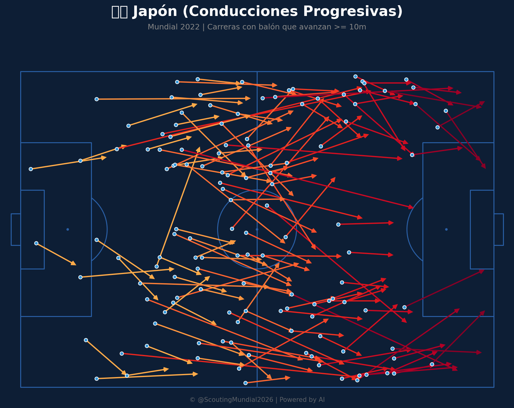
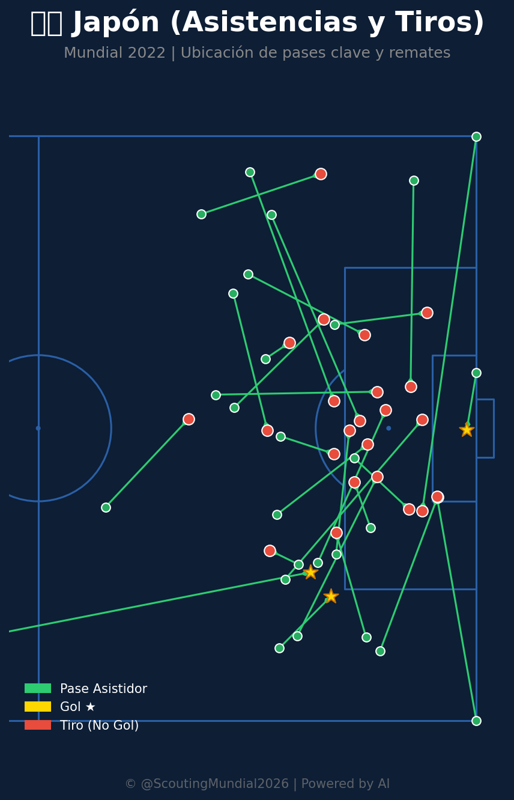

Grupo F
 Japón
Japón
Países Bajos vs Japón
📅 2026-06-14 · 🕒 15:00 (Local)
Países Bajos

2 - 2
FINALIZADO
Japón
📅 2026-06-14 · 🕒 15:00 (Local)
Japón
Países Bajos y Japón regalaron uno de los encuentros más vistosos de la primera jornada táctica, saldado con un trepidante empate 2-2. La escuadra neerlandesa impuso condiciones territoriales en la primera mitad, haciendo circular el balón con paciencia desde atrás con Virgil van Dijk y Nathan Aké, y encontrando profundidad por su costado izquierdo. No obstante, Japón reaccionó de manera soberbia en el complemento: su asfixiante presión coordinada en bloque medio-alto incomodó la salida de Reijnders y provocó pérdidas clave. El combinado nipón explotó al máximo su letalidad en transición por bandas a través de Ito y Doan, castigando las espaldas de la adelantada línea defensiva neerlandesa para rescatar un valioso punto.
Países Bajos ejerció un dominio sostenido en el flujo ofensivo, liderando la intensidad el 61.7% del partido y alcanzando su cénit absoluto (100.00) en el minuto 34', lo que indica un fuerte impulso inicial y la probable construcción de una ventaja significativa en ese periodo. Sin embargo, Japón, pese a liderar solo el 33.0% en intensidad, demostró una resiliencia táctica clave, plasmada en su pico de 87.00 en el minuto 80'. Esta tardía pero efectiva ráfaga ofensiva fue crucial para generar las oportunidades que les permitieron igualar la contienda, reflejando cómo la incapacidad neerlandesa para capitalizar su dominio prolongado abrió la puerta a la capitalización nipona de sus momentos de mayor agudeza para el 2-2 final.

El mapa de calor neerlandés muestra un control de juego muy amplio: dominan prácticamente todo el campo, con una presencia especialmente fuerte en su lado izquierdo de ataque (zona donde se concentra el área rival en la visualización), además de mantener buena ocupación en ambas bandas y en el medio campo. La red de pases revela una estructura de construcción muy sólida desde atrás, con Van Dijk, Aké y Verbruggen iniciando la circulación, Reijnders y Schouten/Veerman como motores en el medio, y conexiones constantes hacia Simons, Gakpo, Depay, Dumfries y Malen en ataque. Es un equipo que progresa el balón de forma colectiva y con mucha gente involucrada en la creación.
El mapa de amenaza esperada confirma que generan peligro de forma distribuida por todo el último tercio, con un punto de generación muy alto en una zona intermedia del campo (probablemente fruto de una jugada de banda o un pase filtrado clave) y otro foco muy intenso cerca del borde del área, lo que sugiere llegadas frecuentes con calidad en los metros finales. El mapa de conducciones progresivas es masivo: decenas de carreras con balón que atraviesan el centro y llegan al último tercio, mostrando un equipo muy vertical una vez recuperan la posesión.
En defensa, el mapa de acciones muestra una presión intensísima y muy bien distribuida por todo el campo, lo que indica que no solo atacan bien, sino que también presionan de forma coordinada para recuperar rápido. En cuanto a definición, acumulan 74 disparos y 9 goles (alrededor de 12% de conversión), con los remates concentrados dentro y cerca del área pequeña, además de un gol llamativo desde fuera del área.
El mapa de calor japonés cuenta una historia distinta: su actividad se concentra mucho más en su propio campo y en el medio campo, con dos núcleos de ocupación bien marcados en zonas intermedias, pero con menos presencia sostenida en el último tercio rival. Esto sugiere un equipo que prioriza el orden y la salida controlada desde atrás antes que el dominio territorial puro.
La red de pases muestra una estructura compacta con Gonda, Yoshida, Tomiyasu y Taniguchi como base, Morita, Endo y Kamada como enlaces centrales, y salidas hacia Doan e Ito en ataque. Sin embargo, se nota que jugadores ofensivos como Mitoma, Minamino y Maeda aparecen bastante desconectados del resto, con muy pocas conexiones, lo que indica que el ataque japonés depende mucho de transiciones puntuales y menos de una construcción colectiva sostenida.
El mapa de xT japonés muestra una generación de peligro más concentrada en zonas puntuales cerca del área, destacando una celda con un valor de amenaza muy elevado, posiblemente fruto de una jugada decisiva específica. El mapa defensivo japonés es comparable en intensidad al neerlandés: mucha presión y recuperaciones distribuidas por todo el campo, lo que confirma su reputación de equipo muy trabajador y agresivo sin balón. En definición, con 42 disparos y 6 goles, su tasa de conversión (cerca del 14%) es incluso superior a la de Países Bajos, con los remates muy concentrados cerca del punto de penalti y el área pequeña.







